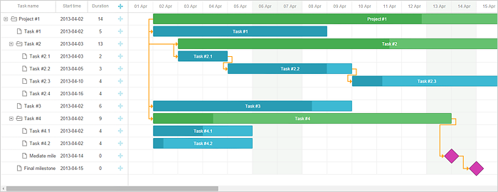

Available only in PRO Edition
This functionality is available only in the PRO edition.
The library provides the auto_scheduling.js extension that gives Gantt the ability to schedule tasks automatically depending on relations between them.

For example, imagine that you have two tasks connected by a dependency link and the second task starts when the first one ends, and you need to change the schedule of the first task by moving it to a new date.
Auto scheduling makes the start date of the second task update according to the end date of the first task each time when it changes. This feature allows you to generate and maintain project schedule by specifying relations between tasks with no need to set dates of each task manually.
To use the auto scheduling functionality, you should enable the auto_scheduling plugin using the gantt.plugins method:
gantt.plugins({
auto_scheduling: true
});
And set the auto_scheduling property to true:
gantt.config.auto_scheduling = true;
Related sample: Auto Scheduling extension
When auto scheduling is enabled, individual tasks still can be scheduled manually.
To disable auto scheduling for a particular task and make it manually scheduled, set the auto_scheduling property of the task object to false:
var task = gantt.getTask(id);
task.auto_scheduling = false;
You can also prevent auto scheduling of a specific task using the onBeforeTaskAutoSchedule handler:
gantt.attachEvent("onBeforeTaskAutoSchedule",function(task, start, link, predecessor){
if(task.completed) {
return false;
}
return true;
});
The list of available methods and properties:
To enable auto scheduling in the Gantt chart, set the auto_scheduling property to true:
gantt.config.auto_scheduling = true;
By default, tasks are rescheduled only when a new date violates the constraint. In order to always reschedule tasks to the earliest possible date, use the property auto_scheduling_strict:
gantt.config.auto_scheduling_strict = true;
Note that starting from v6.1 the config works only when the auto_scheduling_compatibility option is enabled.
The auto_scheduling_initial property specifies whether gantt will do auto scheduling on data loading. It's set to true by default:
gantt.config.auto_scheduling_initial = true;
To recalculate the schedule of the whole project, use the autoSchedule method:
gantt.autoSchedule();
If you need to recalculate the schedule starting from a particular task, pass the id of the task as an argument to the autoSchedule method:
gantt.autoSchedule(taskId);
In case you need to check whether the task is unscheduled, use the isUnscheduledTask method with the task object as an argument:
var isUnscheduled = gantt.isUnscheduledTask(task);
To find all circular references in the chart, make use of the findCycles method:
gantt.findCycles();
If you need to check whether the link is circular, you can apply the isCircularLink method:
var isCircular = gantt.isCircularLink(link);
To get the list of tasks and links a task is connected with, use the getConnectedGroup method:
gantt.getConnectedGroup(18);
// => {links:["16", "17", "18"], tasks:[18, 17, 19, 20]}
The list of available events is given below:
// before auto scheduling starts
gantt.attachEvent("onBeforeAutoSchedule",function(taskId){
// any custom logic here
return true;
});
// after auto scheduling finishes
gantt.attachEvent("onAfterAutoSchedule",function(taskId, updatedTasks){
// any custom logic here
});
// before a particular task is rescheduled
gantt.attachEvent("onBeforeTaskAutoSchedule",function(task,start,link,predecessor){
// any custom logic here
return true;
});
// after a particular task is rescheduled
gantt.attachEvent("onAfterTaskAutoSchedule",function(task,start,link,predecessor){
// any custom logic here
});
// if the circular reference has been detected and auto scheduling is not possible
gantt.attachEvent("onCircularLinkError",function(link, group){
// any custom logic here
});
// if circular links were found during auto scheduling
gantt.attachEvent("onAutoScheduleCircularLink",function(groups){
// any custom logic here
});
Lag and lead times are special values that are used to create complex relations between tasks.
Lag is a delay between tasks which are linked by a dependency. Lead is an overlap between tasks which are linked by a dependency.
There can be two types of successor tasks:
E.g.: If we set a lead equal to 1 day for the dependency link, task B will start one day before task A ends;
E.g.: If we set a lag equal to 1 day for the dependency link, task B will start in one day after task A ends.
Lag and lead values are set in the additional property of the link object - link.lag:
By default, it's implied that the lag value of each dependency link is set as 0.
Gantt doesn't provide a built-in UI for editing lag or any other properties of the link. However, you can implement it manually by following the recommendations given in the related chapter.
Related sample: Edit-lag Popup
dhtmlxGantt provides the possibility to set additional time constraints for tasks.
Time constraints are applicable only to tasks and milestones. Projects are not affected by them.
You can specify constraints for a task via the Constraint control in the lightbox of a task.
gantt.config.lightbox.sections = [
{ name:"description", height:38, map_to:"text", type:"textarea", focus:true},
{ name:"constraint", type:"constraint" }, { name:"time", type:"duration", map_to:"auto" }
];
It is also possible to specify separate columns for the type of constraint and its date in the grid and use inline editors to define constraints for tasks.
Use the constraint_type and constraint_date columns' names, correspondingly.
var constraintTypeEditor = {
type: "select", map_to: "constraint_type", options: [
{ key: "asap", label: gantt.locale.labels.asap },
{ key: "alap", label: gantt.locale.labels.alap },
{ key: "snet", label: gantt.locale.labels.snet },
// more options
]
};
var constraintDateEditor = {
type: "date",
map_to: "constraint_date",
min: new Date(2019, 0, 1),
max: new Date(2020, 0, 1)
};
gantt.config.columns = [
{ // previous column},
{
name:"constraint_type", align:"center", width:100, template:function (task){
return gantt.locale.labels[gantt.getConstraintType(task)];
}, resize: true, editor: constraintTypeEditor
},
{
name:"constraint_date", align:"center", width:120, template:function (task) {
//template logic
},
resize: true, editor: constraintDateEditor
},
{ name: "add", width: 44 }
];
Related sample: Schedule From Project Start & Constraints
There are several types of time constraints:
1. As soon as possible - If this constraint is set to an independent task, the task starts at the same time that the project does. If this constraint is set to a dependent task, the task starts as soon as its predecessor tasks end.
2. As late as possible - If this constraint is set to an independent task, the task ends at the same time that the project does. If this constraint is set to a dependent task, the end of the task coincides with the start of its immediate successor task.
The other types of constraints affect tasks regardless of the their types (dependent or independent):
3. Start no earlier than – the task should start on the specified date or after it.
4. Start no later than – the task should start on the specified date or before it.
5. Finish no earlier than – the task should end on the specified date or after it.
6. Finish no later than – the task should end on the specified date or before it.
7. Must start on – the task should start exactly on the specified date.
8. Must finish on – the task should end exactly on the specified date.
By independent tasks here we mean tasks that don't have any successors or predecessors. In other words, these are tasks that don't have any links/relations that connect them or any of their parents to other tasks.
There are two strategies of planning tasks within a project: forward and backward planning. They are defined by combinations of configuration settings:
The forward planning of tasks is used by default, i.e. gantt.config.schedule_from_end is set to false.
// forward planning of tasks is used
gantt.config.schedule_from_end = false;
In this case planning of tasks is implemented from the start date or from the date of the earliest task. Tasks are planned as soon as possible, if there are no other constraints applied to them.
The start date of the project can be optionally set by the gantt.config.project_start config:
gantt.config.project_start = new Date(2019, 2, 1);
Related sample: Schedule From Project Start & Constraints
Is also possible to plan tasks from the end of the project, i.e. to apply backward planning. For this you need to set the gantt.config.schedule_from_end property to true and specify the end date of the project via the gantt.config.project_end configuration option:
gantt.config.schedule_from_end = true;
gantt.config.project_end = new Date(2019, 4, 1);
In this case tasks are planned as late as possible. The last task should end on the end date of the project.
Related sample: Schedule From Project End
When a user changes the date of a task by moving it with the mouse pointer or via the lightbox, the task automatically receives one of the two constraint types: either start no earlier than+%start date% or finish no later than+%end date%, depending on the chosen planning strategy.
Thus a task won't be scheduled to the earliest date if the later date is set from the UI. This may be confusing to a not prepared user especially since constraints are not displayed in the chart by default.
You can enable displaying of constraints using the addTaskLayer method.
Related sample: Schedule From Project Start & Constraints
This behavior differs from the auto scheduling logic of gantt prior to v6.1 and is considered to be correct, since it's the same way auto planning works in MS Project.
If that is not what you want, you can switch back to pre-6.1 auto scheduling by disabling constraints:
gantt.config.auto_scheduling_compatibility = true;